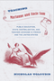
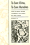
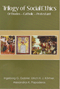
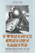

Browse
other Titles:
A B C
D E F
G H I
J K L
M N O
P Q R
S T U
V W X
Y Z |
 |
Tainted
Greatness
Antisemitism and Cultural Heroes
edited
by Harrowitz, Nancy A.
328 pp • 6x9 • Spring 1994
paper 978-1-56639-161-0
cloth 978-1-56639-153-5
|
 |
Taking
It Personally
Racism in the Classroom from Kindergarten to College
Berlak,
Ann and Sekani Moyenda
216 pp • 6x9 • Spring 2001
paper 978-1-56639-876-3
cloth 978-1-56639-875-6
|
 |
Taking
Time
Parental Leave Policy and Corporate Culture
Fried,
Mindy
256 pp • 5.5x8.25 • Fall 1998
paper 978-1-56639-647-9
cloth 978-1-56639-646-2
|
|
Tales
Out of School
Implementing Organizational Change in the Elementary Grades
Sussmann,
Leila
266 pp • Spring 1977
cloth 978-0-87722-097-8 |
 |
Talking
Health with Dr. Brian McDonough
edited
by McDonough, M.D., Brian P.
264 pp • 6x9 • Fall 1994
cloth 978-1-56639-207-5 |
 |
Tasting Freedom
Octavius Catto and the Battle for Equality in Civil War America
Biddle, Daniel R. and Murray Dubin
New in Paperback!
632 pp • 6x9 • Fall 2017
paper 978-1-4399-1349-9
cloth 978-1-59213-465-6
|
 |
Taxes
and State Power
Political Instability in Bolivia, 1900-1950
Gallo,
Carmenza
200 pp • Spring 1991
cloth 978-0-87722-800-4 |

|
The Teacher's Attention
Why Our Kids Must and Can Get Smaller Schools and Classes
Delavan, Garrett
244 pp • 6x9 • Spring 2009
paper 978-1-59213-894-4
cloth 978-1-59213-893-7
|
|  |
Teaching Marianne and Uncle Sam
Public Education, State Centralization, and Teacher Unionism in France and the United States
Toloudis, Nicholas
230 pp • 6x9 • Fall 2012
cloth 978-1-43990-906-5
|

|
Technocapitalism
A Critical Perspective on Technological Innovation and Corporatism
Suarez-Villa, Luis
230 pp • 5.5x8.25 • Fall 2009
paper 978-1-4399-0043-7
cloth 978-1-4399-0042-0
|
 |
Technological
Change and Co-Determination in Sweden
Sandberg,
�ke with Gunnar Broms Arne Grip Lars Sundstrom Jesper Steen
and Peter Ullmark, foreword by Andrew Martin
360 pp • 6x9 • Spring 1992
cloth 0-87722-918-X
EAN 978-0-87722-918-6
|
 |
Technological Turf Wars
A Case Study of the Computer Antivirus Industry
Johnston, Jessica
232 pp • 5.5x8.25• Fall 2008
paper 978-1-59213-882-1
cloth 978-1-59213-881-4
|
 |
Technological
Visions
The Hopes and Fears that Shape New Technologies
edited
by Sturken, Marita, Douglas Thomas and Sandra Ball-Rokeach
384 pp • 6x9 • Fall 2003
paper 978-1-59213-227-0
cloth 978-1-59213-226-3
|
 |
Technology
and the Rise of the Networked City in Europe and America
edited
by Tarr, Joel A. and Gabriel Dupuy
360 pp • Fall 1988
cloth 978-0-87722-540-9 |
 |
Technology
Assessment
A Feminist Perspective
Morgall,
Janine Marie
264 pp • 5.5x8.25 • Fall 1993
paper 978-1-56639-091-0
cloth 978-1-56639-090-3 |
 |
Teen
Mothers and the Revolving Welfare Door
Harris,
Kathleen Mullan, foreword by Frank F. Furstenberg, Jr.
224 pp • 5.5x8.25 • Fall 1996
cloth 978-1-56639-499-4 |
 |
Teenagers
and Teenpics
The Juvenilization of American Movies in the 1950s
Doherty,
Thomas
288 pp • 6x9 • Spring 2002
paper 978-1-56639-946-3
cloth 978-1-56639-945-6
|
 |
Telling Young Lives
Portraits of Global Youth
edited by Jeffrey, Craig, and Jane Dyson
232 pp • 6x9 • Fall 2008
paper 978-1-59213-931-6
cloth 978-1-59213-930-9
|
 |
The Temp Economy
From Kelly Girls to Permatemps in Postwar America
Hatton, Erin, foreword by Nelson Lichtenstein
232 pp • 5.5x8.25 • Fall 2010
paper 978-1-4399-0081-9
cloth 978-1-4399-0080-2
|

|
Temple University
125 Years of Service to Philadelphia, the Nation, and the World
Hilty, James W.
256 pp • 9x11 • Fall 2009
cloth 978-1-4399-0019-2 |
 |
Tensions in the American Dream
Rhetoric, Reverie, or Reality
Bush, Melanie E. L. and Roderick D. Bush
258 pp • 6x9 • Fall 2014
paper 978-1-59213-838-8
cloth 978-1-59213-837-1 |

|
Terrorizing Latina/o Immigrants
Race, Gender, and Immigration Politics in the Age of Security
Sampaio, Anna
230 pp • 6x9 • Fall 2015
paper 978-1-4399-1286-7
cloth 978-1-4399-1285-0
|

|
The Textures of Time
Agency and Temporal Experience
Flaherty, Michael G.
192 pp • 6x9 • Fall 2010
paper 978-1-4399-0263-9
cloth 978-1-4399-0262-2
|
 |
The
Thee Generation
Reflections on the Coming Revolution
Regan,
Tom
176 pp • Fall 1990
paper 978-0-87722-772-4
cloth 978-0-87722-758-8 |
 |
Their
Day in the Sun
Women of the Manhattan Project
Howes,
Ruth H. and Caroline C. Herzenberg, foreword by Ellen C. Weaver
280 pp • 6x9 • Fall 1999
paper 978-1-59213-192-1
cloth 978-1-56639-719-3
|
 |
Theologies
and Liberation in Peru
The Role of Ideas in Social Movements
Pe�a,
Milagros
240 pp • 5.5x8.25 • Spring 1995
cloth 978-1-56639-294-5 |
 |
Theorizing Discrimination in an Era of Contested Prejudice
Discrimination in the United States
Lucas, Samuel Roundfield
296 pp • 6x9• Fall 2008
paper 978-1-59213-913-2
cloth 978-1-59213-912-5
|
 |
There
Goes the 'Hood
Views of Gentrification from the Ground Up
Freeman,
Lance
248 pp • 6x9 • Spring 2006
paper 978-1-59213-437-3
cloth 978-1-59213-436-6
|
 |
Thinking
about the Baby
Gender and Transitions into Parenthood
Walzer,
Susan
224 pp • 5.5x8.25 • Fall 1998
paper 978-1-56639-631-8
cloth 978-1-56639-630-1
|
 |
Thinking Your Way to Freedom
A Guide to Owning Your Own Practical Reasoning
Gardner,
Susan T., illustrations by Dirk van Stralen
296 pp • 8.5x11 • Fall 2008
paper 978-1-59213-867-8
|

|
This Is All I Choose to Tell
History and Hybridity in Vietnamese American Literature
Pelaud, Isabelle Thuy
216 pp • 5.5x8.25 • Fall 2010
paper 978-1-4399-0217-2
cloth 978-1-4399-0216-5
|
|
This
Fine Place So Far from Home
Voices of Academics from the Working Class
edited
by Dews, C.L. Barney and Carolyn Leste Law
352 pp • 6x9 • Spring 1995
paper 978-1-56639-291-4
cloth 978-1-56639-290-7
|
 |
Tiananmen Fictions Outside the Square
The Chinese Literary Diaspora and the Politics of Global Culture
Kong, Belinda
292 pp • 6x9 • Spring 2012
paper 978-1-4399-0759-7
cloth 978-1-4399-0758-0 |
 |
Time
and Experience
McInerney,
Peter K.
224 pp • Fall 1990
paper 978-1-56639-010-1
cloth 978-0-87722-752-6 |
 |
Time
and Social Theory
Adam,
Barbara
250 pp • Fall 1990
cloth 978-0-87722-788-5
|
 |
Time
to Care
Redesigning Child Care to Promote Education, Support Families,
and Build Communities
Lombardi,
Joan
248 pp • 6x9 • Fall 2002
paper 978-1-59213-009-2
cloth 978-1-59213-008-5
|
|
Tomboys
A Literary and Cultural History
Abate, Michelle Ann
338 pp • 6x9 • Spring 2008
paper 978-1-59213-723-7
cloth 978-1-59213-722-0
|
 |
To
Move, To Learn
Witkin,
Kate with Richard Philip, photographs by Ricker Winsor
160 pp • Spring 1977
cloth 978-0-87722-091-6 |

|
Toomey's Triumph
Inside a Key Senate Campaign
Gullan, Harold I.
256 pp • 6x9 • Spring 2012
cloth 978-1-4399-0835-8 |
|
To
Reason Why
The Debate about the Causes of U.S. Involvement in the Vietnam
War
edited
by Kimball, Jeffrey P.
216 pp • Spring 1990
cloth 978-0-87722-709-0 |
|  |
To
Save China, To Save Ourselves
The Chinese Hand Laundry Alliance of New York
Yu,
Renqiu
253 pp • 6x9 • Fall 1992
paper 978-1-56639-395-9
cloth 978-0-87722-996-4 |

|
"To Serve a Larger Purpose"
Engagement for Democracy and the Transformation of Higher Education
Edited by Saltmarsh, John and Matthew Hartley
304 pp • 6x9 • Spring 2011
paper 978-1-4399-0507-4
cloth 978-1-4399-0506-7
|

|
To The City
Urban Photographs of the New Deal
Foulkes, Julia L.
142 pp • 6x9 • Fall 2010
paper 978-1-59213-998-9
cloth 978-1-59213-997-2
|
 |
Tortilleras
Hispanic and U.S. Latina Lesbian Expression
edited
by Torres, Lourdes and Inmaculada Perpetusa-Seva
288 pp • 7x10 • Fall 2002
paper 978-1-59213-007-8
cloth 978-1-59213-006-1
|
 |
Tough
Choices
In Vitro Fertilization and the Reproductive Technologies
edited
by Stephenson, Patricia and Marsden G. Wagner
192 pp • 5.5x8.25 • Fall 1993
cloth 978-1-56639-060-6 |

|
Toward a Pragmatist Sociology
John Dewey and the Legacy of C. Wright Mills
Dunn, Robert G.
190 pp • 5.5x8.25 • Fall 2017
cloth 978-1-4399-1459-5
|
 |
Toward
Better Problems
New Perspectives on Abortion, Animal Rights, the Environment,
and Justice
Weston,
Anthony
204 pp • 5.5x8.25 • Fall 1992
paper 978-0-87722-948-3
cloth 978-0-87722-947-6 |
 |
Toward
Solomon's Mountain
The Experience of Disability in Poetry
edited
by Baird, Joseph L. and Deborah S. Workman
160 pp • Spring 1986
cloth 978-0-87722-416-7 |
 |
Toward
the Modern Economy
Early Industry in Europe, 1500-1800
Gutmann,
Myron P.
280 pp • Spring 1988
cloth 978-0-87722-547-8 |
 |
Toxic
Work
Women Workers at GTE Lenkurt
Fox,
Steve
192 pp • Fall 1991
paper 978-0-87722-895-0
cloth 978-0-87722-816-5 |
 |
Trade
Union Gospel
Christianity and Labor in Industrial Philadelphia, 1865-1915
Fones-Wolf,
Ken
260 pp • Fall 1989
cloth 978-0-87722-652-9 |
|
Trading
Down
Africa, Value Chains, and the Global Economy
Gibbon,
Peter and Stefano Ponte
272 pp • 6x9 • Spring 2005
paper 978-1-59213-368-0
cloth 978-1-59213-367-3
|
 |
Transcendence
and Wittgenstein's Tractatus
Hodges,
Michael P.
172 pp • Spring 1990
cloth 978-0-87722-692-5 |
|
Transcommunality
From the Politics of Conversion to the Ethics of Respect
Childs,
John Brown
256 pp • 5.5x8.25 • Fall 2002
paper 978-1-59213-005-4
cloth 978-1-59213-004-7
|
 |
Transfeminist Perspectives in and beyond Transgender and Gender Studies
edited by Enke, Anne
268 pp • 6x9 • Spring 2012
paper 978-1-4399-0747-4
cloth 978-1-4399-0746-7 |
 |
The
Transformation of American Catholic Sisters
Qui�onez,
Lora Ann and Mary Daniel Turner
224 pp • Fall 1991
paper 978-1-56639-074-3
cloth 978-0-87722-865-3
|
 |
Transformations of Warfare in the Contemporary World
edited by Torpey, John and David Jacobson
192 pp • 5.5x8.25 • Spring 2016
paper 978-1-4399-1313-0
cloth 978-1-4399-1312-3
|
 |
Transforming
Knowledge
Minnich,
Elizabeth Kamarck
312 pp • 6x9 • Fall 2004
paper 978-1-59213-132-7
cloth 978-1-59213-131-0
|
|
Transgender
Care
Recommended Guidelines, Practical Information, and Personal Accounts
Israel,
Gianna E. and Donald E. Tarver, foreword by Diane Shaffer, M.D.
304 pp • 6x9 • Fall 1997
paper 978-1-56639-852-7
cloth 978-1-56639-571-7
|

|
Transient Images
Personal Media in Public Frameworks
Freedman, Eric
230 pp • 6x9 • Fall 2010
paper 978-1-4399-0327-8
cloth 978-1-4399-0326-1
|
|
Transnational
Asian American Literature
Sites and Transits
edited
by Lim, Shirley Geok-lin, John Blair Gamber, Stephen Hong Sohn and
Gina Valentino 320 pp • 6x9 • Fall
2005
paper 978-1-59213-451-9
cloth 978-1-59213-450-2
|
 |
Transnationalizing Viet Nam
Community, Culture, and Politics in the Diaspora
Valverde, Kieu-Linh Caroline
198 pp • 6x9 • Fall
2012
paper 978-1-4399-0680-4
cloth 978-1-4399-0679-8
|

|
The Transnational Politics of Asian Americans
edited by Collet, Christian, Pei-te Lien
Foreword by Don Nakanishi
252 pp • 6x9 • Spring 2009
paper 978-1-59213-861-6
cloth 978-1-59213-860-9
|

|
Travels of William Bartram Reconsidered
Dion, Mark
112 pp • 8.5x12 • Spring 2010
cloth 978-0-6152-5748-8 |
 |
Treacherous Subjects
Gender, Culture, and Trans-Vietnamese Feminism
Duong, Lan P.
264 pp • 6x9 • Spring 2012
paper 978-1-4399-0178-6
cloth 978-1-4399-0177-9 |

|
Trial Courts as Organizations
Ostrom, Brian J., Charles W. Ostrom, Roger A. Hanson Jr., and Matthew Kleiman
204 pp • 5.5x8.25 • Spring 2007
cloth 978-1-59213-630-8
|
|
The
Trial Lawyer's Art
Schrager,
Sam
264 pp • 6x9 • Fall 2000
paper 978-1-56639-799-5
cloth 978-1-56639-673-8
|
 |
The
Triangle Fire, the Protocols of Peace, and Industrial Democracy
in Progressive Era New York
Greenwald,
Richard A.
344 pp • 6x9 • Spring 2005
paper 978-1-59213-175-4
cloth 978-1-59213-174-7
|
 |
Trilogy of Social Ethics
Orthodox - Catholic - Protestant
Gabriel, Ingeborg G., Ulrich H.J. Körtner and Alexandros K. Papaderos
320 pp • 6x9 • Fall 2013
paper 978-0-931214-16-5 |
 |
Troubled
Pasts
News and the Collective Memory of Social Unrest
Edy, Jill
A.
240
pp • 5.5x8.25 • Spring 2006
paper 978-1-59213-497-7
cloth 978-1-59213-496-0
|

|
Troubling Gender
Youth and Cumbia in Argentina's Music Scene
Vila, Pablo and Pablo Sem�n, contributions by Elo�sa Mart�n and Mar�a Julia Carozzi
230 pp • 6x9 • Fall 2011
paper 978-1-4399-0267-7
cloth 978-1-4399-0266-0
|

|
Tutoring Matters
Everything You Always Wanted to Know about How to Tutor
Second Edition
Chin, Tiffani, Jerome Rabow and Jeimee Estrada
240 pp • 5.5x8.25 • Fall 2011
paper 978-1-4399-0741-2
cloth 978-1-4399-0740-5
|
 |
TVA
and Black Americans
Planning for the Status Quo
Grant,
Nancy L.
240 pp • Fall 1989
cloth 978-0-87722-626-0
|
|  |
Twentieth
Century Limited
Industrial Design in America, 1925-1939
Meikle,
Jeffrey L.
264 pp • 7x10 • Spring 2001
paper 978-1-56639-893-0
cloth 978-1-56639-892-3
|
 |
Twenty-First Century Color Lines
Multiracial Change in Contemporary America
edited by Grant-Thomas, Andrew, and Gary Orfield, foreword by Christopher Edley, Jr.
328 pp • 6x9• Fall 2008
paper 978-1-59213-692-6
cloth 978-1-59213-691-9 |
 |
The
Two Faces of Political Apathy
DeLuca,
Thomas
304 pp • 6x9 • Spring 1995
paper 978-1-56639-315-7
cloth 978-1-56639-314-0
|
 |
200 Years of Latino History in Philadelphia
Al Día, The Staff of
200 pp • 8.5x11 • Fall 2012
cloth 978-0-578-10660-1 |
|
Two
Paths Toward Peace
Child,
James W. and Donald Scherer
271 pp • Fall 1991
cloth 978-0-87722-882-0 |
|
The
Two-in-One
Walking with Smokie, Walking with Blindness
Michalko,
Rod
256 pp • 5.5x8.25 • Fall 1998
paper 978-1-56639-649-3
cloth 978-1-56639-648-6
|

|
Tyranny of the Minority
The Subconstituency Politics Theory of Representation
Bishin, Benjamin
New in Paperback!
216 pp • 6x9 • Spring 2010
paper 978-1-59213-659-9
cloth 978-1-59213-658-2
|